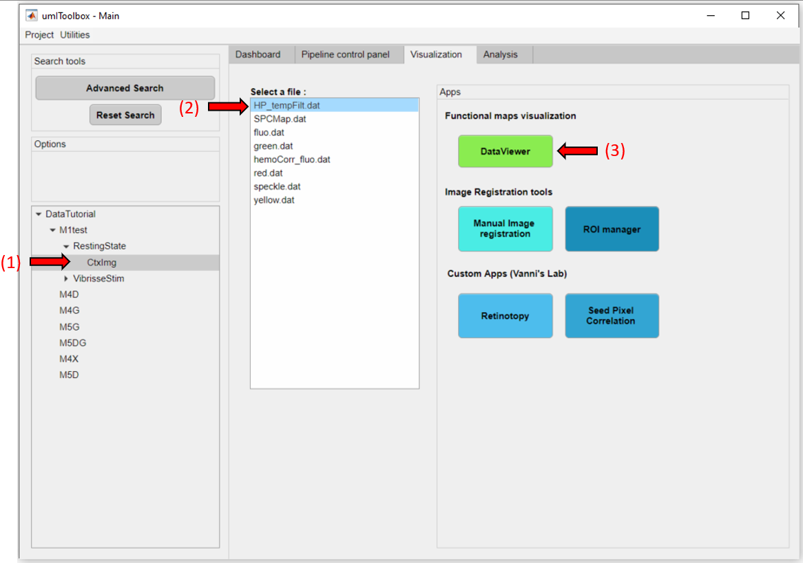
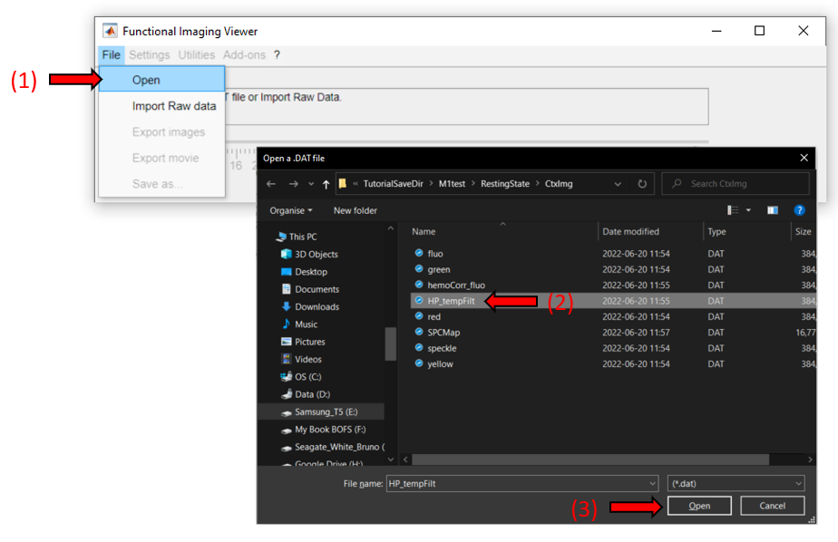
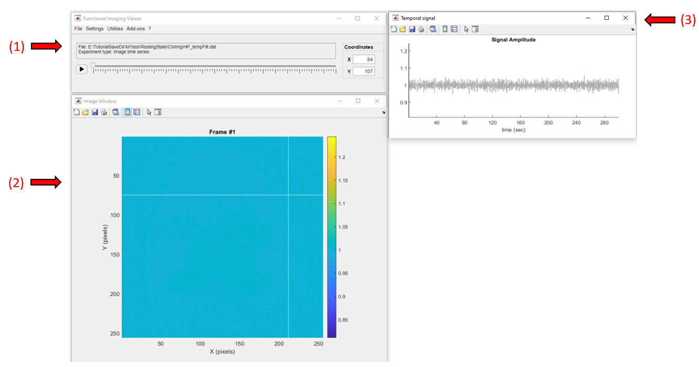
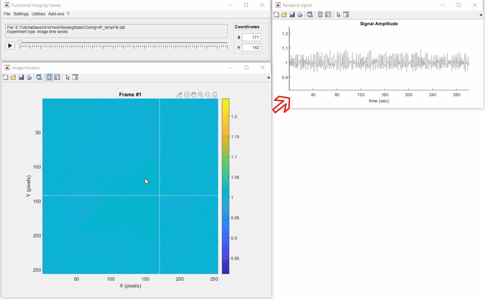
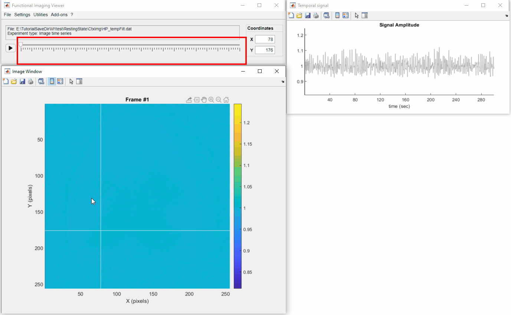
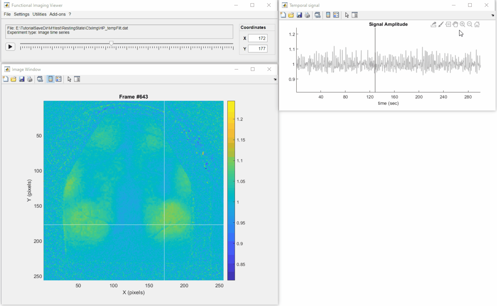
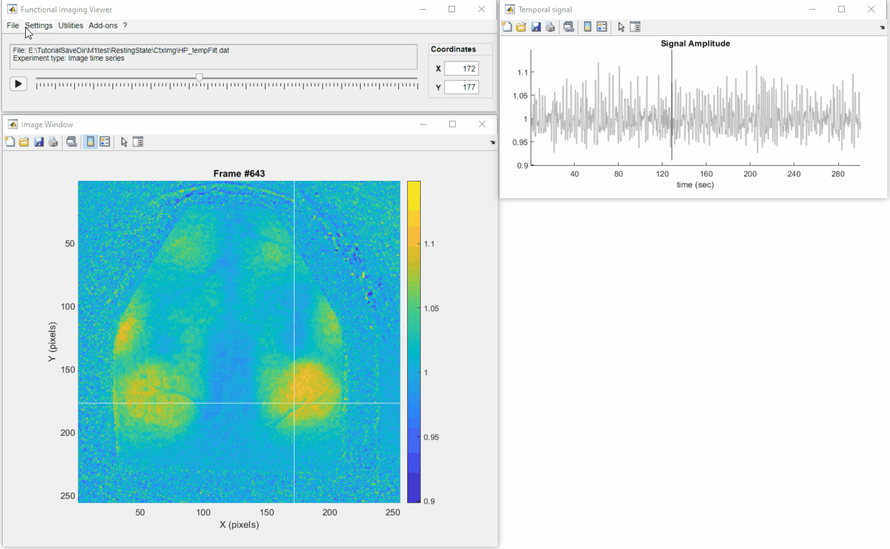

In this tutorial you will learn the basics of the DataViewer app to visualize and explore imaging data. Here, we will an intermediate step from one of the recordings created in a previous tutorial ("Generate functional connectivity maps of cortical areas") as an example. To read the full documentation of the DataViewer app, click here.
You can launch DataViewer from the main GUI or as a standalone from Matlab's command window.
In Matlab's command window, launch the main GUI:
umIToolbox('C:/FOLDER/projectfile.mat');
Go to the Visualization tab. Then select the object containing the file to be opened (step 1). In the Select a file: list box, select the file (step 2) - in this example, HP_tempFilt.dat. Finally, click on the app's button (step 3) to launch DataViewer:
To open an imaging file in DataViewer directly from Matlab's command window,launch DataViewer with the full path of the file as input:
DataViewer('C:/FOLDER/PROJECT_SAVEFOLDER/HP_tempFilt.dat');
Alternatively, launch the DataViewer app:
DataViewer
In DataViewer's main window, go to File >> Open and select the .dat file to open:
In this tutorial, we will explore an intermediate step from the preproceesing of a resting state experiment. The data stored in the file HP_tempFilt.dat consists of the fluorescence signal that was corrected for the hemodynamic artifacts, followed by the removal of the global signal variance and temporally filtered and normalized (check the tutorial on preprocessing data for resting state for details).
Below is a screenshot of the app with the data loaded. It consists of three windows: the main window (1), where all the options and controls are located, the image window (2) where the current frame of the data is shown, and the temporal signal window (3) where the temporal profile of the selected pixel is displayed.
Click on a pixel to get it's temporal profile:
To change frames, either move the slider in the main window or double-click on the plot from the temporal signal window:
Now, let's adjust the color scale limits to better visualize the fluctuations of the fluorescence signal across the mouse cortex. To do so you can simply use the vertical zoom option on the temporal signal window as so:
If you want to give a precise number, go to Settings >> Image Options and change the values of min and max. In addition, we can also change the default colormap through the Image Options:
Finally, we can use the playback button to display the "movie" of the fluorescence signal. This recording was obtained with a frame rate of 5Hz (default playback speed). We can change the playback speed in Settings >> Playback speed. Below, we can observe the fluctuations of the fluorescence signal across the mouse cortical areas (playback speed at 3 times the real frame rate):